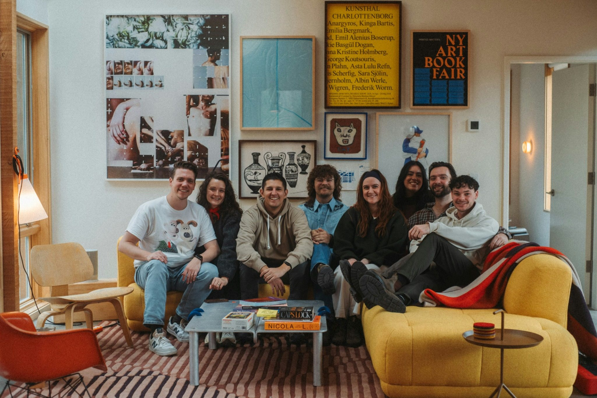

✨
📸
✦
🧠 One photo · 10 seconds · 5 questions
The 10-Second
Memory Test
Study one ordinary moment for ten seconds. Then we'll see how many of the little details your brain managed to keep.
No pressure. No tricks. Just don't blink…●Download on theApp Store
Scan to get StillkeepFree to start on iPhone
Stillkeep keeps photos and their stories together in a private journal.
Ready when you are
1 chance
Think you'll remember
everything?
When you press start, you'll get exactly 10 seconds with the picture. Then it disappears for good.
📵 No screenshots⏱ 10 seconds❓ 5 quick questions
10

Look everywhere — the questions won't only be about the obvious stuff.
What do you remember?
0/5
remembered
Not bad.
●Download Stillkeep on theApp Store
Scan to downloadPrivate photo journal for iPhone